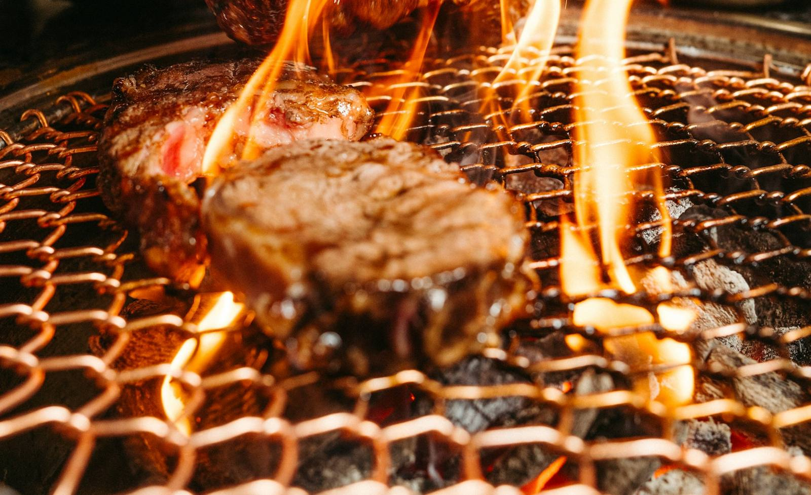

제주 서귀포 중문 · 흑돼지 구이
난축맛돈,
직원이 구워 드립니다.
중문보건소 건너편. 고기는 직원이 굽고, 손님은 드시기만 하세요.
★ 4.81 네이버 평점8,428 리뷰2026년 10월 23일 기준
손님이 말하는 천돈가
다녀간 손님들이 가장 많이 꼽은 것
음식이 맛있어요
2,580고기 질이 좋아요
1,775친절해요
1,370직접 잘 구워줘요
925매장이 넓어요
809
네이버 플레이스 방문자 리뷰 "이런 점이 좋았어요" 선택 수 · 2026-10-23 기준 · 리뷰 전체 보기 ↗
 참고 이미지 · 실제 매장 아님
참고 이미지 · 실제 매장 아님
자리
넓은 매장, 단체도 함께
단체석이 있고 유아의자도 있어요. 2~8명은 네이버로 바로 예약할 수 있어요.
오시는 길
중문보건소 건너편
제주특별자치도 서귀포시 천제연로 280, 1층중문관광단지에서 가까워요
옮겼어요. 예전 주소(일주서로 873)에서 지금 자리로 넓혀 이전했습니다. 지도 앱에 옛 주소가 나오면 위 주소로 찾아 주세요.
- 영업
- 11:30 시작마감·휴무·마지막 주문 확인 중 (구글 12:00–22:00, 다이닝코드 11:30–23:00로 서로 다름)
- 예약
- 네이버 예약 2~8명 · 일반·단체 예약하기 ↗
- 주차
- 확인 중네이버 "인근 대체 주차장" / 받은 자료 "전용 주차장"
- 편의
- 유아의자, 단체석, 대기 공간, 무선 인터넷
여행 계획 중이시면 지도 앱에서 천돈가를 저장해 두세요. 제주에 와서 바로 다시 찾을 수 있어요.
전화 전에 30초
몇 분이, 언제 오세요?
고르시면 전화로 말씀하실 내용을 정리해 드려요. 복사해서 네이버 예약 요청사항에 적으셔도 돼요.
자주 묻는 질문
오기 전에 궁금한 것
고기는 직접 구워야 하나요?
직원이 고기를 구워 드리는 서비스가 있어요.
단체로 가도 되나요?
단체석이 있어요. 네이버 예약은 2~8명까지 되고, 더 많은 인원은 전화로 확인해 주세요.
예전 일주서로 873 가게와 같은 곳인가요?
네, 천제연로 280(중문보건소 건너편)으로 넓혀 옮겼어요.
International guests · 外国游客 · 海外のお客さま
Jeju black pork BBQ in Jungmun
Cheondonga (천돈가) Jeju Jungmun Main Branch
Jeju black pork BBQ. Staff grill the meat for you. The signature menu is Nanchuk-matdon (난축맛돈), a pork breed developed by Korea's Rural Development Administration.
- Address
- 1F, 280 Cheonjeyeon-ro, Jungmun-dong, Seogwipo-si, Jeju
(across from Jungmun Public Health Center)
We moved from our old address, 873 Iljuseo-ro. Same restaurant. - Hours
- 11:30–23:00 closed days
- Phone
- +82-64-739-0775
- Kids
- High chairs available
- Maps
- Use Naver Map or KakaoMap for directions. Google Maps has limited directions in Korea (as of March 2026).
Naver Map ↗ · KakaoMap ↗
Reviews & booking info (Naver) ↗
Show this to our staff
- 고기 구워 주세요.Please grill the meat for us.
- 유아의자 하나 주세요.One high chair, please.
- 메뉴판 보여 주세요.May I see the menu?
- 계산할게요.The bill, please.
천돈가 Cheondonga 济州中文（Jungmun）本店
济州黑猪肉烤肉店。店员会为您烤肉。招牌菜是 Nanchuk-matdon（난축맛돈，韩国农村振兴厅培育的猪品种）。
- 地址
- 济州特别自治道 西归浦市 천제연로（天帝渊路）280号 1楼
（中文（Jungmun）保健所对面）
本店已从旧址 일주서로 873 搬迁至此，是同一家店。 - 营业时间
- 11:30–23:00 休息日
- 电话
- +82-64-739-0775
- 儿童
- 有儿童椅
- 地图
- 在韩国导航建议使用 Naver 地图或 Kakao 地图。Google 地图在韩国的导航功能有限（截至2026年3月）。
Naver 地图 ↗ · Kakao 地图 ↗
评价与预约信息（Naver） ↗
请出示给店员看
- 고기 구워 주세요.请帮我们烤肉。
- 유아의자 하나 주세요.请给我们一把儿童椅。
- 메뉴판 보여 주세요.请给我看菜单。
- 계산할게요.我要结账。
천돈가 Cheondonga 濟州中文（Jungmun）本店
濟州黑豬肉燒烤店。店員會為您烤肉。招牌菜是 Nanchuk-matdon（난축맛돈，韓國農村振興廳培育的豬品種）。
- 地址
- 濟州特別自治道 西歸浦市 천제연로（天帝淵路）280號 1樓
（中文（Jungmun）保健所對面）
本店已從舊址 일주서로 873 搬遷至此，是同一家店。 - 營業時間
- 11:30–23:00 公休日
- 電話
- +82-64-739-0775
- 兒童
- 有兒童椅
- 地圖
- 在韓國導航建議使用 Naver 地圖或 Kakao 地圖。Google 地圖在韓國的導航功能有限（截至2026年3月）。
Naver 地圖 ↗ · Kakao 地圖 ↗
評價與預約資訊（Naver） ↗
請出示給店員看
- 고기 구워 주세요.請幫我們烤肉。
- 유아의자 하나 주세요.請給一張兒童椅。
- 메뉴판 보여 주세요.請給我看菜單。
- 계산할게요.我要結帳。
천돈가 チョンドンガ 済州・中文（チュンムン）本店
済州黒豚の焼肉店です。お肉はスタッフが焼いてお出しします。看板メニューはナンチュクマットン（난축맛돈、韓国農村振興庁が開発した豚の品種）です。
- 住所
- 済州特別自治道 西帰浦市 천제연로（天帝淵路）280 1階
（中文（チュンムン）保健所の向かい）
旧住所 일주서로 873 から移転しました。同じお店です。 - 営業時間
- 11:30–23:00 定休日
- 電話
- +82-64-739-0775
- お子さま
- ベビーチェアあり
- 地図
- 道案内は NAVERマップ か カカオマップ をご利用ください。Googleマップは韓国では経路案内が制限されています（2026年3月時点）。
NAVERマップ ↗ · カカオマップ ↗
口コミ・予約案内（NAVER） ↗
スタッフに見せてください
- 고기 구워 주세요.お肉を焼いてください。
- 유아의자 하나 주세요.ベビーチェアをひとつお願いします。
- 메뉴판 보여 주세요.メニューを見せてください。
- 계산할게요.お会計をお願いします。